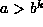

Data Structures and Algorithms with Object-Oriented Design Patterns in Java
Contents
Colophon
Dedication
Preface
Goals
Approach
Outline
Suggested Course Outline
Online Course Materials
Introduction
What This Book Is About
Object-Oriented Design
Abstraction
Encapsulation
Object Hierarchies and Design Patterns
Containers
Enumerations
Visitors
Cursors
Adapters
Singletons
The Features of Java You Need to Know
Variables
Primitive Types and Reference Types
Parameter Passing
Classes and Objects
Inheritance
Interfaces and Polymorphism
Other Features
How This Book Is Organized
Models and Asymptotic Analysis
Foundational Data Structures
Abstract Data Types and the Class Hierarchy
Data Structures
Algorithms
Algorithm Analysis
A Detailed Model of the Computer
The Basic Axioms
A Simple Example-Arithmetic Series Summation
Array Subscripting Operations
Another Example-Horner's Rule
Analyzing Recursive Methods
Solving Recurrence Relations-Repeated Substitution
Yet Another Example-Finding the Largest Element of an Array
Average Running Times
About Harmonic Numbers
Best-Case and Worst-Case Running Times
The Last Axiom
A Simplified Model of the Computer
An Example-Geometric Series Summation
About Arithmetic Series Summation
Example-Geometric Series Summation Again
About Geometric Series Summation
Example-Computing Powers
Example-Geometric Series Summation Yet Again
Exercises
Projects
Asymptotic Notation
An Asymptotic Upper Bound-Big Oh
A Simple Example
Big Oh Fallacies and Pitfalls
Properties of Big Oh
About Polynomials
About Logarithms
Tight Big Oh Bounds
More Big Oh Fallacies and Pitfalls
Conventions for Writing Big Oh Expressions
An Asymptotic Lower Bound-Omega
A Simple Example
About Polynomials Again
More Notation-Theta and Little Oh
Asymptotic Analysis of Algorithms
Rules For Big Oh Analysis of Running Time
Example-Prefix Sums
Example-Fibonacci Numbers
Example-Bucket Sort
Reality Check
Checking Your Analysis
Exercises
Projects
Foundational Data Structures
Arrays
Extending Java Arrays
Constructors
assign
Method
Accessor Methods
Array Indexing Methods-
get
and
put
Resizing an Array-
setBase
and
setLength
Multi-Dimensional Arrays
Array Subscript Calculations
An Implementation
Constructor
Array Indexing Methods-
get
and
put
Matrices
Dense Matrices
Canonical Matrix Multiplication
Singly-Linked Lists
An Implementation
List Elements
LinkedList
Constructor
purge
Method
Accessor Methods
getFirst
and
getLast
Methods
prepend
Method
append
Method
assign
Method
extract
Method
insertAfter
and
insertBefore
Methods
Exercises
Projects
Data Types and Abstraction
Abstract Data Types
Design Patterns
Class Hierarchy
Java Objects and the
Comparable
Interface
Abstract Comparable Objects
Wrappers for the Primitive Types
Containers
Abstract Containers
Visitors
The
isDone
Method
Abstract Visitors
The
AbstractContainer
Class
toString
Method
Enumerations
Searchable Containers
Abstract Searchable Containers
Associations
Exercises
Projects
Stacks, Queues, and Deques
Stacks
Array Implementation
Fields
Constructor and
purge
Methods
push
,
pop
, and
getTop
Methods
accept
Method
getEnumeration
Method
Linked-List Implementation
Fields
Constructor and
purge
Methods
push
,
pop
, and
getTop
Methods
accept
Method
getEnumeration
Method
Applications
Evaluating Postfix Expressions
Implementation
Queues
Array Implementation
Fields
Constructor and
purge
Methods
getHead
,
enqueue
, and
dequeue
Methods
Linked-List Implementation
Fields
Constructor and
purge
Methods
getHead
,
enqueue
, and
dequeue
Methods
Applications
Implementation
Deques
Array Implementation
The ``Head'' Methods
The ``Tail'' Methods
Linked List Implementation
The ``Head'' Methods
The ``Tail'' Methods
Doubly-Linked and Circular Lists
Exercises
Projects
Ordered Lists and Sorted Lists
Ordered Lists
Array Implementation
Fields
Creating a List and Inserting Items
Finding Items in a List
Removing Items from a List
Positions of Items in a List
Finding the Position of an Item and Accessing by Position
Inserting an Item at an Arbitrary Position
Removing Arbitrary Items by Position
Linked-List Implementation
Fields
Inserting and Accessing Items in a List
Finding Items in a List
Removing Items from a List
Positions of Items in a List
Finding the Position of an Item and Accessing by Position
Inserting an Item at an Arbitrary Position
Removing Arbitrary Items by Position
Performance Comparison:
OrderedListAsArray
vs.
ListAsLinkedList
Applications
Sorted Lists
Array Implementation
Inserting Items in a Sorted List
Locating Items in an Array-Binary Search
Finding Items in a Sorted List
Removing Items from a List
Linked-List Implementation
Inserting Items in a Sorted List
Other Operations on Sorted Lists
Performance Comparison:
SortedListAsArray
vs.
SortedListAsList
Applications
Implementation
Analysis
Exercises
Projects
Hashing, Hash Tables, and Scatter Tables
Hashing-The Basic Idea
Example
Keys and Hash Functions
Avoiding Collisions
Spreading Keys Evenly
Ease of Computation
Hashing Methods
Division Method
Middle Square Method
Multiplication Method
Fibonacci Hashing
Hash Function Implementations
Integral Keys
Floating-Point Keys
Character String Keys
Hashing Containers
Using Associations
Hash Tables
Abstract Hash Tables
Separate Chaining
Implementation
Constructor,
getLength
and
purge
Methods
Inserting and Removing Items
Finding an Item
Average Case Analysis
Scatter Tables
Chained Scatter Table
Implementation
Constructor,
getLength
, and
purge
Methods
Inserting and Finding an Item
Removing Items
Worst-Case Running Time
Average Case Analysis
Scatter Table using Open Addressing
Linear Probing
Quadratic Probing
Double Hashing
Implementation
Constructor,
getLength
, and
purge
Methods
Inserting Items
Finding Items
Removing Items
Average Case Analysis
Applications
Exercises
Projects
Trees
Basics
Terminology
More Terminology
Alternate Representations for Trees
N
-ary Trees
Binary Trees
Tree Traversals
Preorder Traversal
Postorder Traversal
Inorder Traversal
Breadth-First Traversal
Expression Trees
Infix Notation
Prefix Notation
Postfix Notation
Implementing Trees
Tree Traversals
Depth-First Traversal
Preorder, Inorder, and Postorder Traversals
Breadth-First Traversal
accept
Method
Tree Enumerations
Constructor
hasMoreElements
and
nextElement
Methods
General Trees
Fields
Constructor and
purge
Methods
getKey
and
getSubtree
Methods
attachSubtree
and
detachSubtree
Methods
N
-ary Trees
Fields
Constructors
isEmpty
Method
getKey
,
attachKey
, and
detachKey
Methods
getSubtree
,
attachSubtree
and
detachSubtree
Methods
Binary Trees
Fields
Constructors
purge
Method
Binary Tree Traversals
Comparing Trees
Applications
Implementation
Exercises
Projects
Search Trees
Basics
M
-Way Search Trees
Binary Search Trees
Searching a Search Tree
Searching an
M
-way Tree
Searching a Binary Tree
Average Case Analysis
Successful Search
Solving The Recurrence-Telescoping
Unsuccessful Search
Traversing a Search Tree
Implementing Search Trees
Binary Search Trees
Fields
find
Method
findMin
Method
Inserting Items in a Binary Search Tree
insert
and
attachKey
Methods
Removing Items from a Binary Search Tree
withdraw
Method
AVL Search Trees
Implementing AVL Trees
Constructor
getHeight
,
adjustHeight
, and
getBalanceFactor
Methods
Inserting Items into an AVL Tree
Balancing AVL Trees
Single Rotations
Double Rotations
Implementation
Removing Items from an AVL Tree
M
-Way Search Trees
Implementing
M
-Way Search Trees
Implementation
Constructor and
getM
Methods
Inorder Traversal
Finding Items in an
M
-Way Search Tree
Linear Search
Binary Search
Inserting Items into an
M
-Way Search Tree
Removing Items from an
M
-Way Search Tree
B-Trees
Implementing B-Trees
Fields
Constructor and
attachSubtree
Methods
Inserting Items into a B-Tree
Implementation
Running Time Analysis
Removing Items from a B-Tree
Applications
Exercises
Projects
Heaps and Priority Queues
Basics
Binary Heaps
Complete Trees
Complete
N
-ary Trees
Implementation
Fields
Constructor and
purge
Methods
Putting Items into a Binary Heap
Removing Items from a Binary Heap
Leftist Heaps
Leftist Trees
Implementation
Fields
Merging Leftist Heaps
Putting Items into a Leftist Heap
Removing Items from a Leftist Heap
Binomial Queues
Binomial Trees
Binomial Queues
Implementation
Heap-Ordered Binomial Trees
Adding Binomial Trees
Binomial Queues
Fields
addTree
and
removeTree
findMinTree
and
findMin
Methods
Merging Binomial Queues
Putting Items into a Binomial Queue
Removing an Item from a Binomial Queue
Applications
Discrete Event Simulation
Implementation
Exercises
Projects
Sets, Multisets, and Partitions
Basics
Implementing Sets
Array and Bit-Vector Sets
Basic Operations
Union, Intersection, and Difference
Comparing Sets
Bit-Vector Sets
Basic Operations
Union, Intersection, and Difference
Multisets
Array Implementation
Basic Operations
Union, Intersection, and Difference
Linked-List Implementation
Union
Intersection
Partitions
Representing Partitions
Implementing a Partition using a Forest
Implementation
Constructor
find
and
join
Methods
Collapsing Find
Union by Size
Union by Height or Rank
Applications
Exercises
Projects
Garbage Collection and the Other Kind of Heap
What is Garbage?
Reduce, Reuse, Recycle
Reduce
Reuse
Recycle
Helping the Garbage Collector
Reference Counting Garbage Collection
When Objects Refer to Other Objects
Why Reference Counting Does Not Work
Mark-and-Sweep Garbage Collection
The Fragmentation Problem
Stop-and-Copy Garbage Collection
The Copy Algorithm
Mark-and-Compact Garbage Collection
Handles
Exercises
Projects
Algorithmic Patterns and Problem Solvers
Brute-Force and Greedy Algorithms
Example-Counting Change
Brute-Force Algorithm
Greedy Algorithm
Example-0/1 Knapsack Problem
Backtracking Algorithms
Example-Balancing Scales
Representing the Solution Space
Abstract Backtracking Solvers
Abstract Solvers
Depth-First Solver
Breadth-First Solver
Branch-and-Bound Solvers
Depth-First, Branch-and-Bound Solver
Example-0/1 Knapsack Problem Again
Top-Down Algorithms: Divide-and-Conquer
Example-Binary Search
Example-Computing Fibonacci Numbers
Example-Merge Sorting
Running Time of Divide-and-Conquer Algorithms
Case 1 ( )
Case 2 (
)
Case 3 (
)
Summary
Example-Matrix Multiplication
Bottom-Up Algorithms: Dynamic
Programming
Example-Generalized Fibonacci Numbers
Example-Computing Binomial Coefficients
Application: Typesetting Problem
Example
Implementation
Randomized Algorithms
Generating Random Numbers
The Minimal Standard Random Number Generator
Implementation
Random Variables
A Simple Random Variable
Uniformly Distributed Random Variables
Exponentially Distributed Random Variables
Monte Carlo Methods
Example-Computing
Simulated Annealing
Example-Balancing Scales
Exercises
Projects
Sorting Algorithms and Sorters
Basics
Sorting and Sorters
Abstract Sorters
Sorter Class Hierarchy
Insertion Sorting
Straight Insertion Sort
Implementation
Average Running Time
Binary Insertion Sort
Exchange Sorting
Bubble Sort
Quicksort
Implementation
Running Time Analysis
Worst-Case Running Time
Best-Case Running Time
Average Running Time
Selecting the Pivot
Selection Sorting
Straight Selection Sorting
Implementation
Sorting with a Heap
Implementation
Building the Heap
Running Time Analysis
The Sorting Phase
Merge Sorting
Implementation
Merging
Two-Way Merge Sorting
Running Time Analysis
A Lower Bound on Sorting
Distribution Sorting
Bucket Sort
Implementation
Radix Sort
Implementation
Performance Data
Exercises
Projects
Graphs and Graph Algorithms
Basics
Directed Graphs
Terminology
More Terminology
Directed Acyclic Graphs
Undirected Graphs
Terminology
Labeled Graphs
Representing Graphs
Adjacency Matrices
Sparse vs. Dense Graphs
Adjacency Lists
Implementing Graphs
Vertices
Enumerations
Edges
Graphs and Digraphs
Accessors and Mutators
Enumerations
Graph Traversals
Directed Graphs
Abstract Graphs
Implementing Undirected Graphs
Using Adjacency Matrices
Using Adjacency Lists
Comparison of Graph Representations
Space Comparison
Time Comparison
Graph Traversals
Depth-First Traversal
Implementation
Running Time Analysis
Breadth-First Traversal
Implementation
Running Time Analysis
Topological Sort
Implementation
Running Time Analysis
Graph Traversal Applications:
Testing for Cycles and Connectedness
Connectedness of an Undirected Graph
Connectedness of a Directed Graph
Testing Strong Connectedness
Testing for Cycles in a Directed Graph
Shortest-Path Algorithms
Single-Source Shortest Path
Dijkstra's Algorithm
Data Structures for Dijkstra's Algorithm
Implementation
Running Time Analysis
All-Pairs Source Shortest Path
Floyd's Algorithm
Implementation
Running Time Analysis
Minimum-Cost Spanning Trees
Constructing Spanning Trees
Minimum-Cost Spanning Trees
Prim's Algorithm
Implementation
Kruskal's Algorithm
Implementation
Running Time Analysis
Application: Critical Path Analysis
Implementation
Exercises
Projects
Java and Object-Oriented Programming
Variables
Primitive Types
References Types
Null References
Parameter Passing
Passing Primitive Types
Passing Reference Types
Objects and Classes
Class Members: Fields and Methods
Constructors
The No-Arg Constructor
Accessors and Mutators
Mutators
Member Access Control
Inner Classes
Static Inner Classes
Non-Static Inner Classes
Inheritance and Polymorphism
Derivation and Inheritance
Derivation and Access Control
Polymorphism
Interfaces
Abstract Methods and Abstract Classes
Method Resolution
Abstract Classes and Concrete Classes
Algorithmic Abstraction
Multiple Inheritance
Run-Time Type Information and Casts
Exceptions
Class Hierarchy Diagrams
Character Codes
References
Index
Copyright © 1998
by
Bruno R. Preiss, P.Eng.
All rights reserved.
 Data Structures and Algorithms
with Object-Oriented Design Patterns in Java
Data Structures and Algorithms
with Object-Oriented Design Patterns in Java Copyright © 1998 by Bruno R. Preiss, P.Eng. All rights reserved.
Copyright © 1998 by Bruno R. Preiss, P.Eng. All rights reserved.